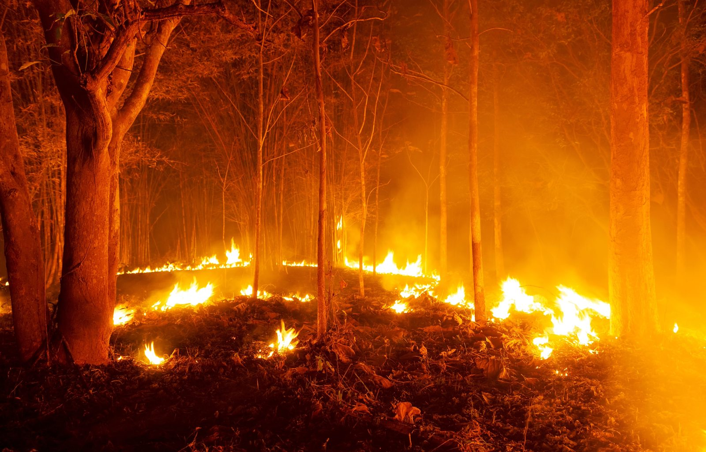

Arquivo
Nem tudo o que reunimos tem uma petição para assinar ou uma decisão para travar. Estes casos ficam aqui como contexto: informação verificada que ajuda a perceber melhor os restantes casos, sem exigir uma ação imediata.

Sobretudo região Centro: Vouzela, Barcelos, Tâmega e Sousa · envolvidos: ICNF · verificado 07/08/2026
4.592 ocorrências consumiram mais de 30.000 hectares, a maior área ardida neste período desde 2017.
Ver o caso e as fontesNacional · envolvidos: SPEA · verificado 07/08/2026
O Governo substitui a avaliação ambiental prévia por fiscalização a posteriori, sob o pretexto da simplificação.
Ver o caso e as fontesEstes dois casos não pedem uma assinatura. Explicam o terreno em que todos os outros casos acontecem: um país que arde e um Estado que está a reduzir a capacidade de avaliar projetos antes de eles avançarem. Sem este contexto, cada luta parece um caso isolado. Com ele, percebe-se o padrão.